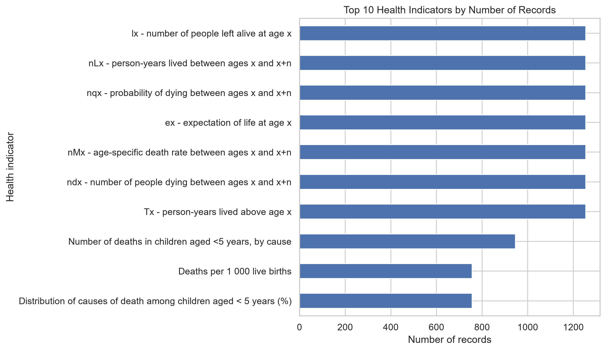
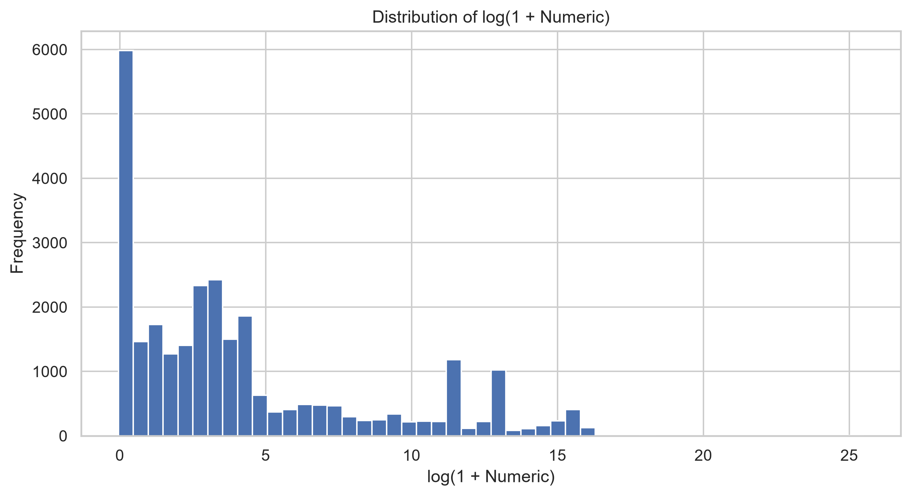
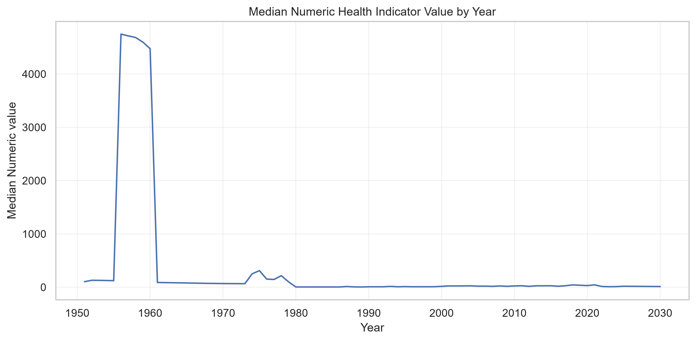
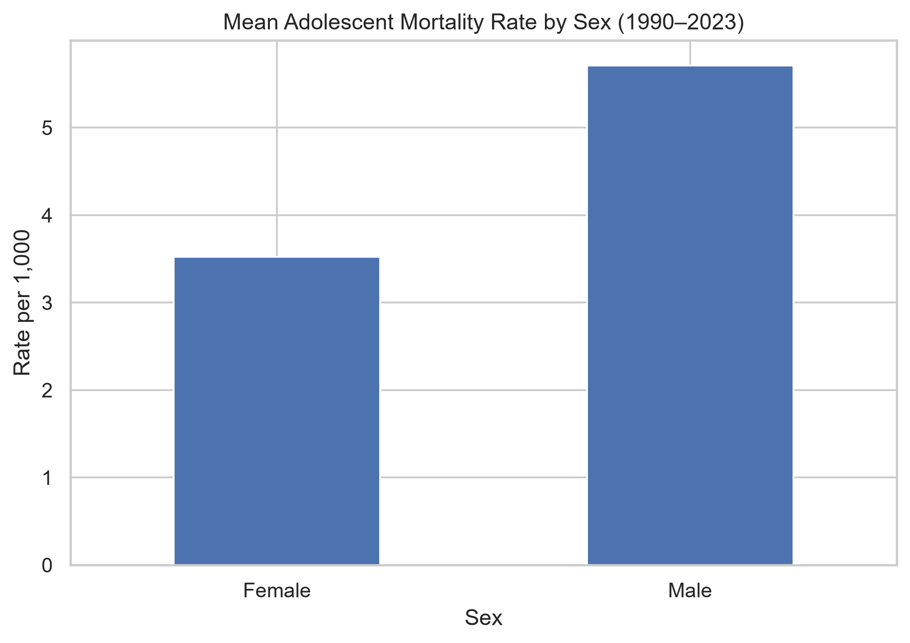

PROJECT OBJECTIVES
Applying a complete data analysis and machine learning workflow to real-world Sri Lankan health data.
Real-World Data
Analyze Sri Lankan health indicators obtained from the World Health Organization.
Data Cleaning
Identify missing values and prepare reliable data for analysis.
Exploratory Analysis
Discover patterns and trends using statistical visualizations.
Hypothesis Testing
Evaluate statistical relationships through two hypothesis tests.
Machine Learning
Develop Ridge Regression and Random Forest Regression models.
Model Evaluation
Compare model performance using MAE, RMSE and R² metrics.
DATA CLEANING & PREPROCESSING
Data Inspection
Loaded the CSV with Pandas and checked shape, data types and missing values.
Missing Target Removal
Removed rows with missing Numeric values: 30,912 → 28,268 records.
Target Leakage Prevention
Excluded Value, Low, High as they directly represent the target.
Irrelevant Feature Removal
Dropped identifier codes and URL fields from the model inputs.
Missing Value Imputation
Median for numerical and Most Frequent for categorical features.
Categorical Encoding
Converted categorical variables using One-Hot Encoding.
Feature Scaling
Standardized numerical year variables using StandardScaler.
Shared Pipeline
Same Scikit-learn preprocessing pipeline applied to both ML models.
DATASET OVERVIEW
Real-world Sri Lankan health indicators collected by the World Health Organization.
0
TOTAL RECORDS
0
DATASET VARIABLES
0
USABLE RECORDS
0
MISSING TARGET VALUES
🌍 DATA SOURCE
Organization: World Health Organization (WHO)
Database: Global Health Observatory
Distribution: Humanitarian Data Exchange (HDX)
🧬 DATA CHARACTERISTICS
Numerical Features: Year, Start Year, End Year
Categorical Features: Health Indicators, Population Dimensions
ML Target Variable: Numeric Health Indicator Value
NUMERICAL SCIENCE • GROUP PROJECT
SRI LANKA
HEALTH INDICATORS
Data Analysis & Machine Learning
M.I. YASIRU
INDEX NO: 006
DHANANJANA
INDEX NO: 002
EXPLORATORY DATA ANALYSIS
Discovering patterns, distributions and characteristics of Sri Lanka's health indicators.
Top 10 Health Indicators

Some indicators contain significantly more records, reflecting differences in years and dimensions.
Target Value Distribution

Numeric values are highly skewed because the dataset combines different health measurements and scales.
TEMPORAL & DEMOGRAPHIC TRENDS
Analyzing historical trends and sex-disaggregated health outcomes in Sri Lanka.
Median Indicator Value by Year

Aggregating heterogeneous indicators across years shows distortions; specific health indicators must be analyzed individually.
Adolescent Mortality by Sex

5.71 / 1,000
3.52 / 1,000
Males demonstrate a substantially higher mean adolescent mortality rate compared to females (1990–2023).
HYPOTHESIS TESTING
Inferential statistical evaluations conducted at the 5% significance level (α = 0.05).
Paired t-Test
Male vs Female Adolescent Mortality (1990–2023)
9.5939
4.525e-11
Pearson Correlation
Adolescent Mortality Rate vs Year (Both Sexes)
-0.7758
4.386e-08
MACHINE LEARNING MODELS
Developing and evaluating two regression algorithms to predict numerical health indicator values.
Ridge Regression
A linear regression algorithm that uses L2 regularization to reduce overfitting and improve generalization.
Random Forest Regression
An ensemble learning algorithm that combines multiple decision trees to capture complex nonlinear patterns.
⚙️ MACHINE LEARNING WORKFLOW
Dataset
Preprocessing
Train / Test Split
Model Training
Evaluation
MODEL PERFORMANCE
Comparing Ridge Regression and Random Forest Regression using unseen test data.
Ridge Regression
R² SCORE
Random Forest Regression
R² SCORE
KEY FINDING
Ridge Regression achieved the highest R² score (0.6418) and lower prediction errors compared with Random Forest Regression. However, the dataset combines different health indicators and measurement units, making the regression task challenging.
RESULTS & DISCUSSION
Key insights obtained through exploratory analysis, statistical testing and machine learning.
Dataset Characteristics
The dataset contains multiple health indicators with different measurement units and scales. The target variable has a highly skewed distribution.
Statistical Significance
Both hypothesis tests produced p-values below 0.05, providing evidence of a sex difference and a linear association with year.
Adolescent Mortality Trend
The selected adolescent mortality indicator showed a strong negative correlation with year (r = -0.7758) from 1990 to 2023.
Machine Learning Results
Ridge Regression achieved better test performance (R² = 0.6418) than Random Forest Regression (R² = 0.1938).
OVERALL INTERPRETATION
The analysis identified statistically significant relationships within the selected adolescent mortality indicator. However, combining different health measurements into a single prediction target limits the interpretability of the machine learning results. Correlation does not establish causation.
CONCLUSION & FUTURE WORK
Summarizing the project outcomes and identifying opportunities for future improvement.
Project Conclusion
This project successfully applied a complete data analysis and machine learning workflow to a real-world Sri Lankan health dataset obtained from the World Health Organization.
Future Recommendations
Future research should focus on improving model interpretability and prediction performance through more targeted analysis.
Meaningful machine learning predictions require well-defined target variables, reliable preprocessing and consistent data measurements.
REFERENCES & ACKNOWLEDGMENTS
Data sources, technical documentation and academic resources used in this project.
Dataset Sources
Global Health Observatory – Sri Lanka Health Indicators.
WHO Health Indicators Dataset Distribution Platform.
Technical Documentation
Python data manipulation and numerical computing.
Machine learning preprocessing, regression and evaluation.
Statistical hypothesis testing.
Exploratory data visualization.
ACKNOWLEDGMENTS
We acknowledge the World Health Organization and the Humanitarian Data Exchange for providing access to real-world health data. We also thank our academic lecturers for their guidance throughout this project.
NUMERICAL SCIENCE • GROUP PROJECT
THANK YOU
QUESTIONS & ANSWERS
Thank you for your attention.
We welcome your questions and feedback.